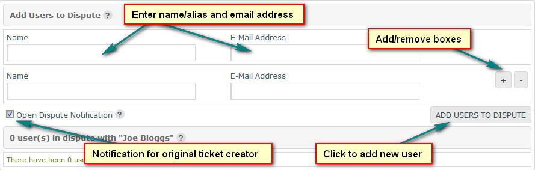
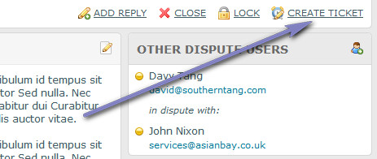

COMMERCIAL VERSION INCLUDES: - FREE upgrades for life - One time payment, NO subscriptions - ALL features unlocked and unlimited
Overview
Here you can view a dispute ticket and manage the dispute. Dispute tickets are the same as standard tickets, with the exception being multiple people can reply to the same ticket. Useful if you have a gaming site and have disputes between users etc
Create Dispute
To convert a ticket into a dispute, view the standard ticket and click 'Create Dispute' from the top menu (as shown here). Then refer to the 'Other Dispute Users' section below.
Quick Link Bar
This contains the dispute ID and its status, along with the following:
Add Reply - Slow scrolls to reply box
Close - Closes dispute. No emails are sent.
Lock - Locks dispute. If locked, visitor cannot re-open dispute. No emails are sent.
Create Ticket - Reverts dispute back to standard ticket. No emails are sent. If this is used, all dispute users and their replies are deleted from the system.
Other Dispute Users
When you have converted a ticket to a dispute, you need to add other users to the dispute. To do this, firstly, click the icon on the 'Other Dispute Users'
bar to launch the dispute users window:
You can add as many users as you need and you can batch add them. Note that the free version may have restrictions. Use the +/ symbols to add/remove boxes. Once you have
entered the names/email addresses click the button to add the users. You do NOT have to enter the original users email address, this person is already
in the dispute. If you do enter it, it will be ignored:

Once you have added the users, emails get sent:
- The original user is notified that their ticket has now been converted to a dispute and it details the other users in the dispute. This is ONLY sent if
the 'Open Dispute Notification' box is checked (see above).
- Other users get notification to let them know a dispute has been opened against them. Note that if a users email doesn`t exist in the system, an account
is auto created for them.
Edit/Delete Other Users from Dispute
In the dispute window, use the edit icons or checkboxes to edit or delete other dispute users. When deleting, select the delete option from the drop down:
Deleting a user will also delete all replies by that user, but it won`t remove their account.
Dispute Users Post Privileges
You can enable/disable post prvileges if you want to for other dispute users as well as the original dispute ticket user. This is useful if you have a lot of people in a dispute and people keep posting too much or out of turn. To batch change post permissions for other users view the dispute window:
Coloured markers denote current status. You can also click the name on the main screen to enable/disable privileges. This is required for the main user:
User Details
Details of the original dispute ticket, including the department, user and email are shown in the right hand menu.
Edit Ticket
Clicking the icon on the dispute subject bar launches the dispute ticket edit window.
Also, the icon on the 'Original User Details' bar is the same. Here you can change details entered by the dispute ticket creator. Any custom field data will also be shown and can be edited.
Template Language - This is only relevant if you are using the multi language option.

Edit Notification
If there is more than 1 support team user in the system, an optional box is shown in the dispute edit window called 'Describe this Change for Other Users'. Text
entered here is sent in an email to other users. Useful if you make major edits and want to inform other users. If the box is left blank, no email is sent.
Silent mode is also available to the administrative user. If this is enabled, dispute edit notification is always sent, but only to the administrative user (unless email overrides are
in place).
To enable this, open the 'admin/control/user-defined/defined2.inc.php' file and set the 'ENABLE_SILENT_EDIT_NOTIFICATION', to 1.
You can also send this to alternative email addresses via the 'ENABLE_SILENT_EDIT_NOTIFICATION_EMAIL' override option, which is useful if other users need to be informed. Enter
addresses, separated with a comma. Example:
define('ENABLE_SILENT_EDIT_NOTIFICATION', 1);
define('ENABLE_SILENT_EDIT_NOTIFICATION_EMAIL', 'joe@gmail.com,fred@gmail.com,sarah@yahoo.co.uk');
Attachments
If a dispute ticket has attachments, click the link below the message to view the attachments window:

The attachments window lets you view or delete attachments. Delete attachments via the checkboxes provided:

Assign To
This enables you to assign the dispute to specific users ONLY, but ONLY if the dispute department is set to have tickets manually assigned to users.
This is ONLY seen by the administrator OR if a user has access to the ticket assign page. Only users assigned to specific disputes can see them, along with the administrator who by default, can
always see all disputes. Use the checkboxes provided to assign disputes. Disputes can be assigned to a single user or multiple users.
Note that further notifications are only sent to assigned users, so if you are the administrator and want to receive dispute reply notifications, you should always add yourself to the assigned list.

If a dispute is not assigned, it defaults to being viewable by all users who have access to its department.
Notepad
The notepad is a useful feature that lets you make notes about a dispute ticket. This is not seen by visitors, but can be viewed and edited by users
with relevant permissions. To enter a note type in the notepad box and click out of the box, this auto updates the note.
Alternatively, click the small icon to launch the notepad window where you can view and edit the notes.
Adding Reply
To add reply, type message in the reply box. You can format the text using BBCode if this feature is enabled. You can also apply a standard
response if any are available via the link on the reply header.
Note that reply box only shows for open dispute tickets. If box isn`t visible, open dispute ticket first.
Note that BBCode is not parsed in email templates.
Edit/Delete Replies
Use the edit/delete links provided beneath each reply to edit or delete reply.
Reply Attachments
If a reply has attachments, click the link below the reply message to view the attachments window. See the notes above about managing attachments.
Custom Fields
Custom field data will be shown beneath the reply box if enabled.
Attachments
Attachments can be added to all replies. The free version allows a single attachment per reply, the commercial version unlimited. Note that for the commercial
version there are no limits on the amount of attachments admin can add per reply. By default 10 max is allowed for admin. To increase edit the 'ADMIN_ATTACH_BOX_OVERRIDE' option
in the 'admin/control/user-defined/defined2.inc.php' file.
Use the links to add/remove attachment boxes.

Status
Specify dispute ticket status after reply.
Add Response
When you add this reply, do you want to add the reply as a standard response? If yes, response will be added to same category as dispute ticket. If selected, a prompt box will appear asking you to give the new response a reference title/name.

Send Mail
Do you wish to send e-mail notification about this dispute ticket reply? Message is sent to all users in dispute.
Merge With Dispute #
Disputes cannot be merged with other disputes. Each dispute is treated as its own entity.
Revert Dispute Back to Ticket
If you wish to revert a dispute back to a standard ticket, click the 'Create Ticket' option on the menu.

IMPORTANT: If reverting back, additional dispute users AND their posts are deleted. This is irreversible!!
Preview Message
Click to show preview of dispute ticket reply message.
Help Tips
The same or additional information may be provided by hovering your cursor over the image next to each heading in the admin area if applicable.